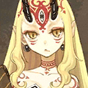
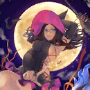
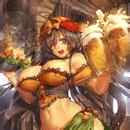
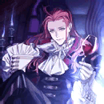

- 11/1
- 定期維修公告（11/2 22:00實施）
非常感謝您的使用。
這裡是「Fate/Grand Order」營運團隊。
將於下記的期間實施「Fate/Grand Order」的定期維修。
維修中無法遊玩「Fate/Grand Order」。
維修開始前請完全結束(關閉程式)。
※維修結束後，若直接以之前的狀態繼續遊玩的話，可能有不正確進行更新而無法正常動作的情況。
維修後由於更新檔案的下載等通信量增加，可能會有短時間覺得遊戲動作變慢的情況。
在維修結束後，請試著檔案的全部下載(一括ダウンロード)。
另外推薦在可連接Wi-Fi的環境中下載。
■時間
2016年11月2日(三) 22:00～23:00(預定)
※維修結束的預定時間可能會有前後差異。
▼遊戲的更新
1.「Fate/EXTELLA」發售記念宣傳活動的開始(11/3追記）
2.聖晶石召喚(期間限定)「Fate/EXTELLA發售記念Pick Up召喚」的開始(11/3追記）
3.一部份Servant的戰鬥動作及寶具演出的修改(11/3追記）
※對象Servant如下。
・

4.在一部份Servant的指令卡顯示的圖像修改(11/3追記）
※對象Servant如下。
・

5.一部份Servant的幕間物語追加(11/3追記）
※對象關卡如下。
・ 第3節
第3節
6.一部份Servant的絆Lv.上限從Lv.5變更至Lv.10(11/3追記）
※對象Servant如下
※絆Lv.到達10時，給予每位Servant的原創概念禮裝。
・


7.期間限定活動「萬聖節・歸來！ 超極☆大南瓜村 ～接著邁向冒險……～」的結束
8.從一部份Servant及概念禮裝的保有技能，刪除已結束活動相關文字
※對象Servant如下。
・


※對象的概念禮裝如下。
・



▼問題的修正
1.在戰鬥中一部份Servant攻擊時，會有背景圖像雜亂情況的問題修正
※對象Servant如下。
・
2.一部份Servant的寶具演出時圖像問題修正
※對象Servant如下。
・
3.一部份Servant的寶具說明文字誤記的問題修正
※僅變更文字，效果本身並無變更。
※對象Servant如下。
・ 
(修正前)自身的攻擊力大提升(1回合)＜OverCharge的話效果UP＞ ＋ 對敵全體的強力攻擊[Lv.1] ＋ 自身的HP減少【副作用】
(修正後)自身的攻擊力大提升(1回合)＜OverCharge的話效果UP＞ ＋ 對敵全體的強力攻擊[Lv.1] ＋ 自身的HP減少1000【副作用】
・ 
(修正前)對敵單體的超強力攻擊[Lv.1]＆中機率即死效果＜OverCharge的話機率UP＞ ＋ 星星大量獲得＜OverCharge的話效果UP＞ ＋ 自身的HP減少【副作用】
(修正後)對敵單體的超強力攻擊[Lv.1]＆中機率即死效果＜OverCharge的話機率UP＞ ＋ 星星大量獲得＜OverCharge的話效果UP＞ ＋ 自身的HP減少1000【副作用】
・ 
(修正前)對敵全體的強力〔持有天或地之力的Servant〕特攻攻擊[Lv.1]＜OverCharge的話特攻威力提升＞＆以低機率賦予暈眩狀態 ＋ 自身的HP減少【副作用】
(修正後)對敵全體的強力〔持有天或地之力的Servant〕特攻攻擊[Lv.1]＜OverCharge的話特攻威力提升＞＆以低機率賦予暈眩狀態 ＋ 自身的HP減少500【副作用】
4.在一部份Servant的幕間物語中，關卡橫幅及支援選擇畫面的職階傾向顯示不正確的問題修正
※對象的幕間的物語如下。
・ 第1節
・  第1節
第1節
對上述的問題修正感到抱歉，會向對象的玩家做出以下對應。
【對象】
於11/2(三) 21:59前有遊玩過「Fate/Grand Order」的所有玩家
【對應內容】
・聖晶石1個
【配布方法】
在禮物箱配布
【配布期間】
2016年11月3日(四)AM3:00～2017年4月30日(日)22:59
非常抱歉麻煩到正在使用的玩家。